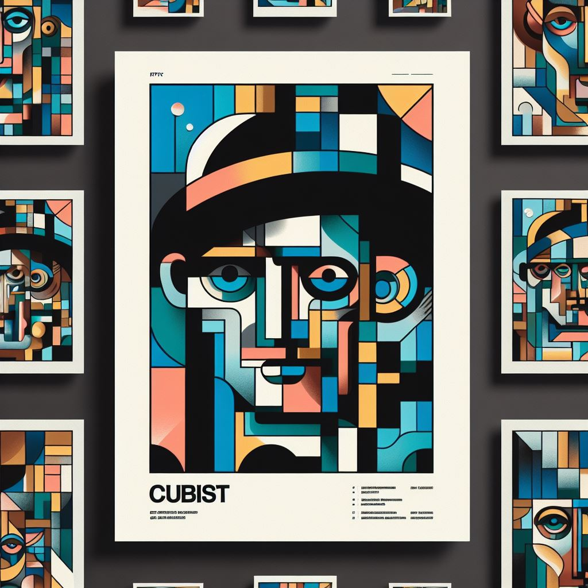
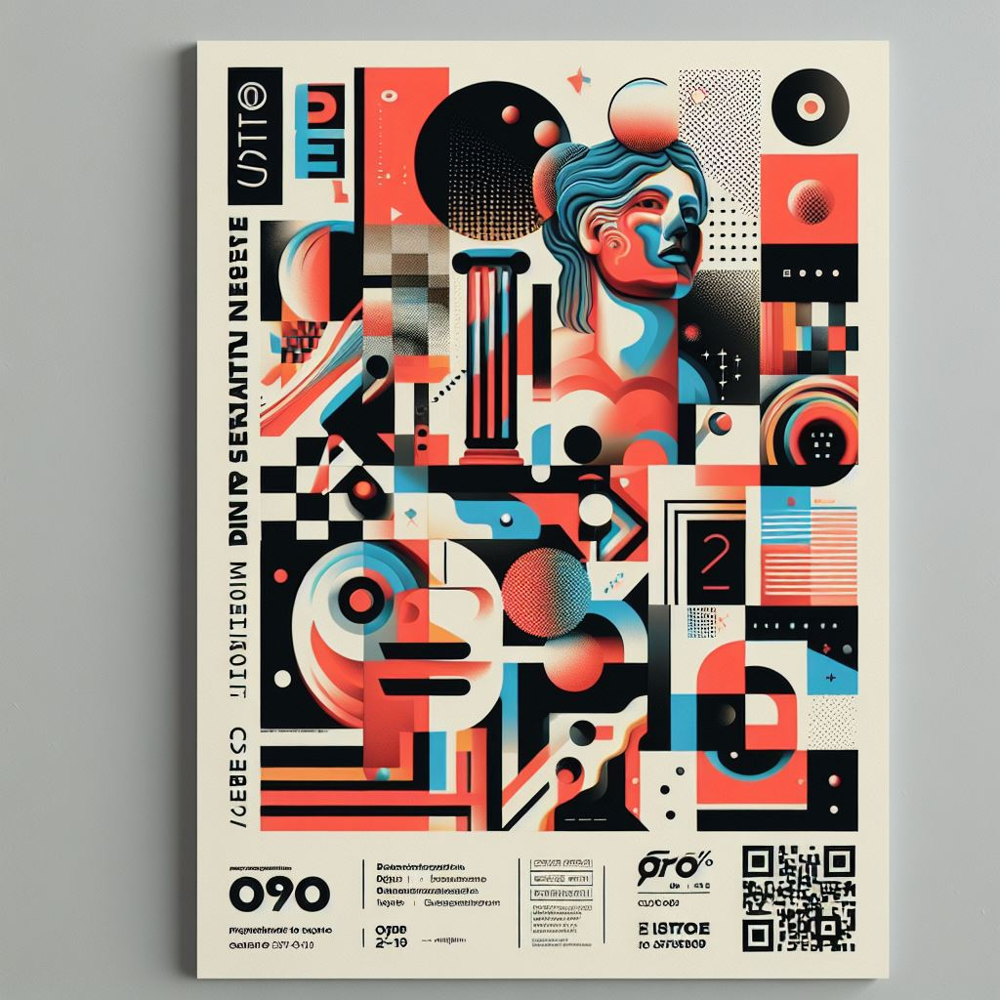
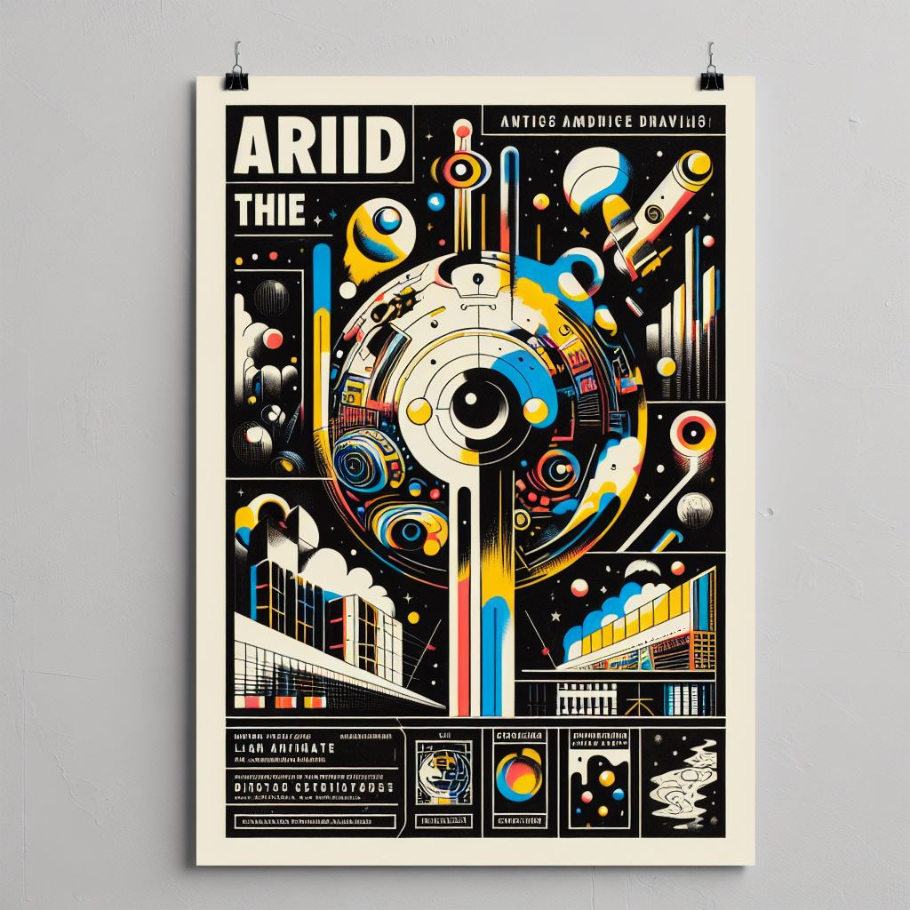
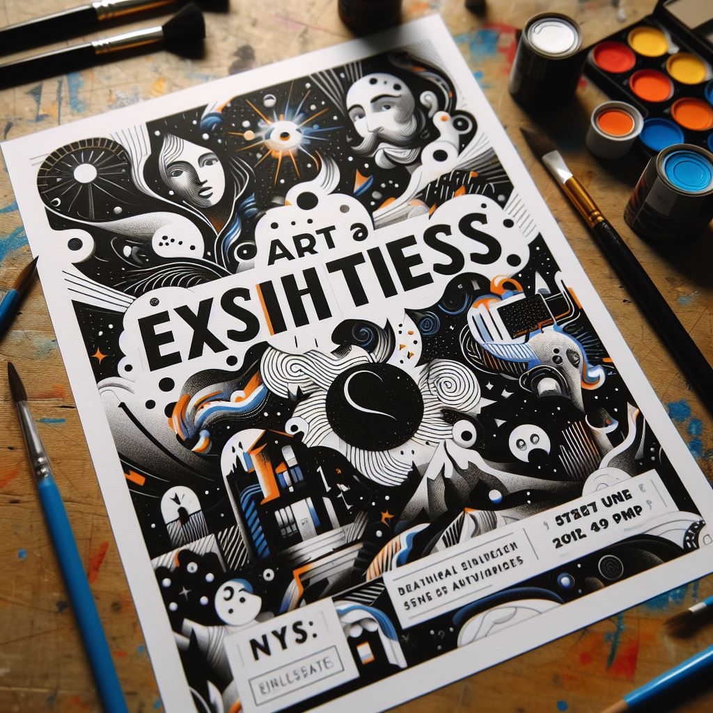

Exposiciones
Recientes
En la emocionante Semana de las Artes, nuestra escuela celebra la creatividad y el talento de todos nuestros estudiantes. Este evento anual transforma nuestras aulas en cautivadoras galerías, mostrando una amplia variedad de obras, desde las creaciones más experimentales hasta las piezas más refinadas. Este año, nos complace especialmente destacar el trabajo de nuestros talentosos alumnos que se están graduando. La exposición no solo es una celebración de sus logros académicos, sino también una oportunidad para que compartan sus visiones artísticas únicas y su evolución a lo largo de su tiempo en la escuela. Desde pinturas vibrantes hasta instalaciones innovadoras, cada obra cuenta una historia única y refleja el compromiso y la pasión de nuestros estudiantes por las artes visuales. Te invitamos a unirte a nosotros en esta experiencia visual, explorando las diversas expresiones creativas que nuestros estudiantes han dado vida durante su tiempo en nuestra querida escuela de artes visuales.
Próximas exposiciones
Rompiendo Barreras: Una Exposición Cubista Parte 1 y 2
Sumérgete en dos exposiciones dedicadas al fascinante mundo del cubismo, explorando las reinterpretaciones visuales y las formas geométricas únicas de nuestros artistas.
 Ecos del Caos: Abstracción en Arte
Descubre el poder de la abstracción mientras nuestros estudiantes desafían los límites convencionales, liberando la expresión artística de las restricciones figurativas.
Imágenes del Mañana: Arte que Desafía el Tiempo
Adéntrate en el futurismo y experimenta la velocidad y energía del mundo moderno a través de las obras visionarias de nuestros talentosos alumnos.
